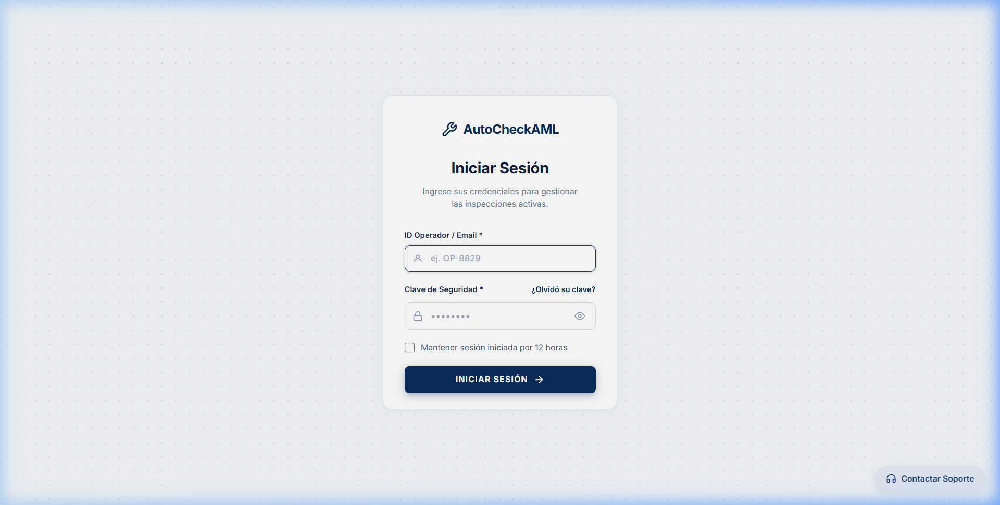
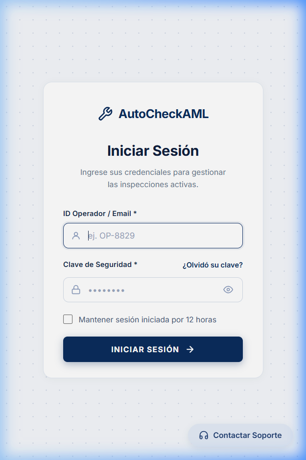
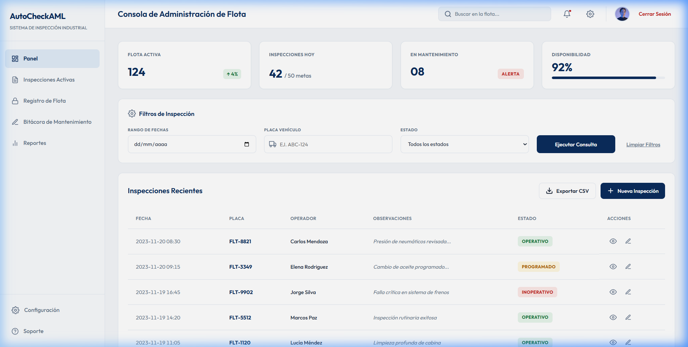
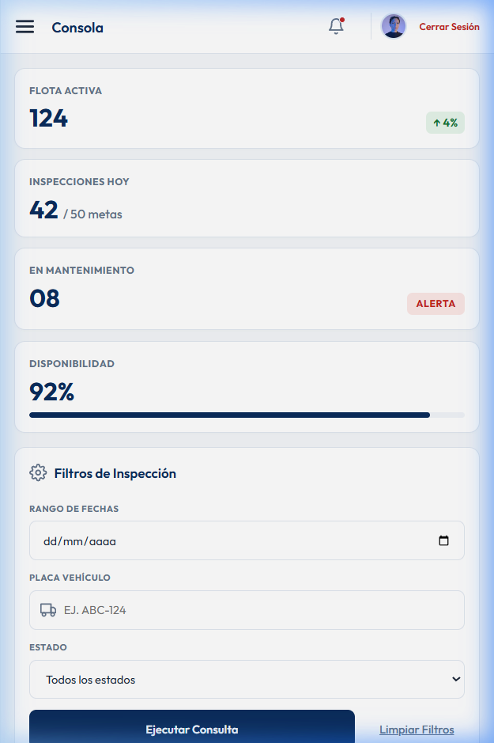
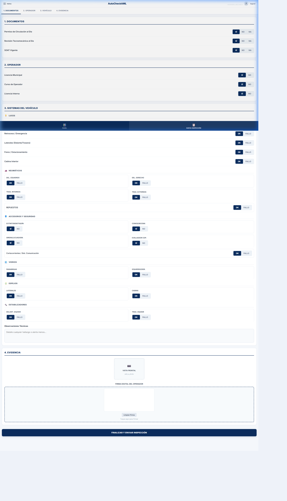
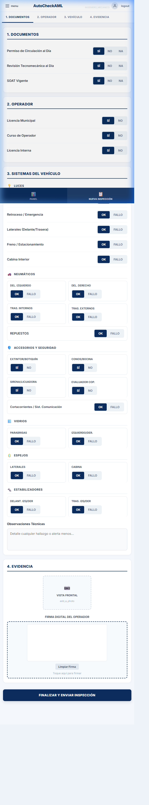
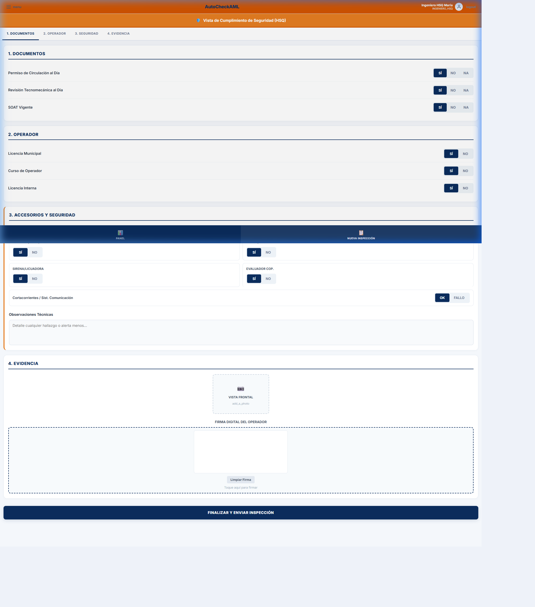
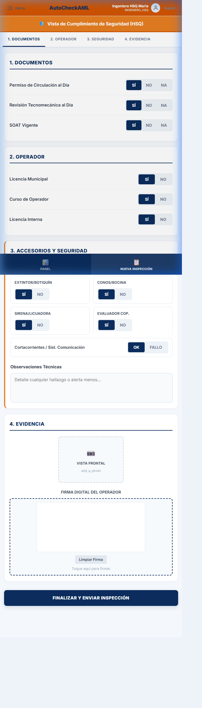
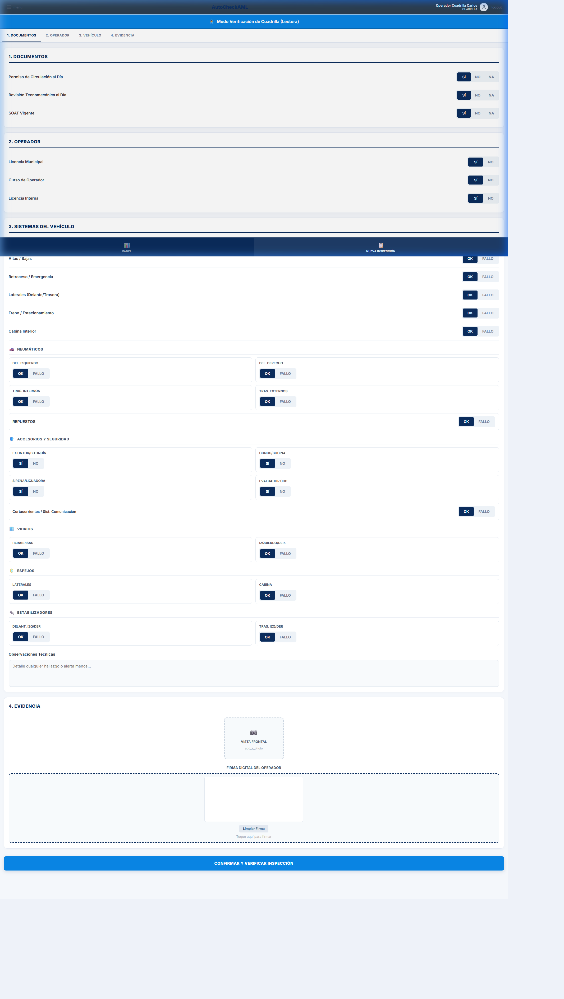
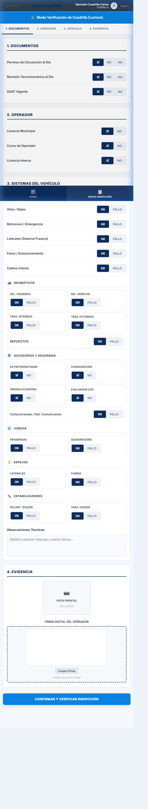

Resumen de hitos logrados, arquitectura de seguridad basada en roles, metodologías de prueba implementadas y resolución de incidencias clave.
Hemos consolidado la infraestructura base e implementado una lógica de diferenciación visual que asegura un control de acceso granular:
Hemos implementado una metodología enfocada en la rapidez de desarrollo y validación cruzada en dispositivos:
Durante esta fase de integración, identificamos y solucionamos las siguientes incidencias críticas:
| Incidencia Detectada | Estado | Solución Técnica Aplicada |
|---|---|---|
|
Claves pre-cargadas en el Login Las credenciales de Admin aparecían escritas por defecto en el cliente. |
Solucionado | Modificación del estado del formulario de Login para inicializar los campos en blanco (`""`), asegurando que cada operador deba escribir obligatoriamente su clave. |
|
Ausencia de Cuentas de Prueba No había usuarios con roles limitados (HSQ, Cuadrilla) creados por defecto. |
Solucionado | Inyección de un cargador lógico en el arranque del servidor (`Program.cs`) que verifica y siembra de forma automática los usuarios `ingeniero`, `hsq` y `cuadrilla` con contraseñas encriptadas. |
|
Desbalance de etiquetas JSX Errores de sintaxis al inyectar bloques condicionales en el formulario. |
Solucionado | Re-estructuración de las etiquetas de cierre en el HTML reactivo de `FormComponent.jsx`, cerrando correctamente los contenedores de botones y grupos interactivos dentro de fragmentos lógicos. |
A continuación, se detalla la correspondencia visual del sistema en entornos móviles y de escritorio para cada uno de los roles implementados:
Formulario de acceso limpio y seguro, con inputs vacíos por defecto y enlace flotante para contactar soporte técnico.


Acceso ejecutivo con indicadores clave, auditoría y control de usuarios restringido solo a roles con nivel jerárquico alto.


Inspección técnica integral. Habilita los módulos de Luces, Neumáticos, Espejos, Vidrios, Estabilizadores, y permite al mecánico registrar observaciones y su firma táctil digital.


Interfaz en naranja de advertencia. Oculta todos los elementos mecánicos pesados y se centra en los implementos de seguridad reglamentarios (Botiquín, Extintor, Sirena, Conos).


Formulario bloqueado en modo de lectura con banner azul en la parte superior. Impide modificaciones accidentales y cambia la acción final a confirmación/verificación del cuestionario.

